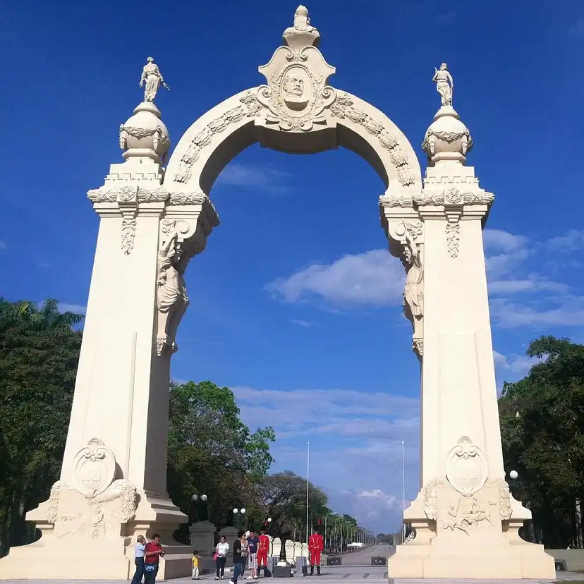
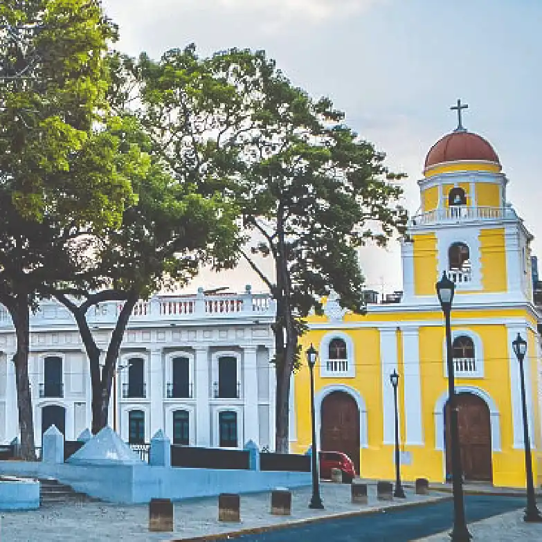
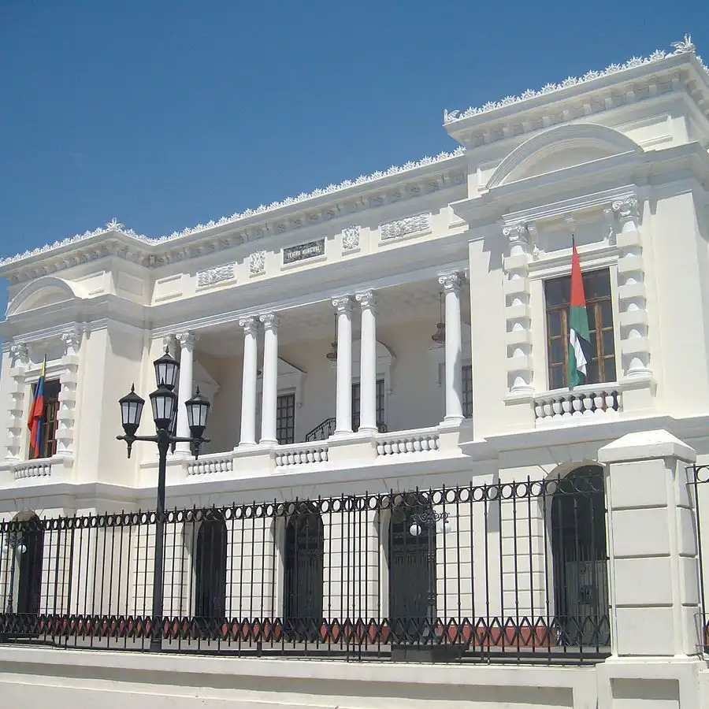
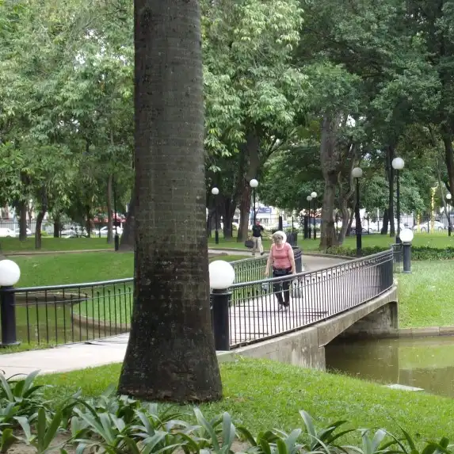
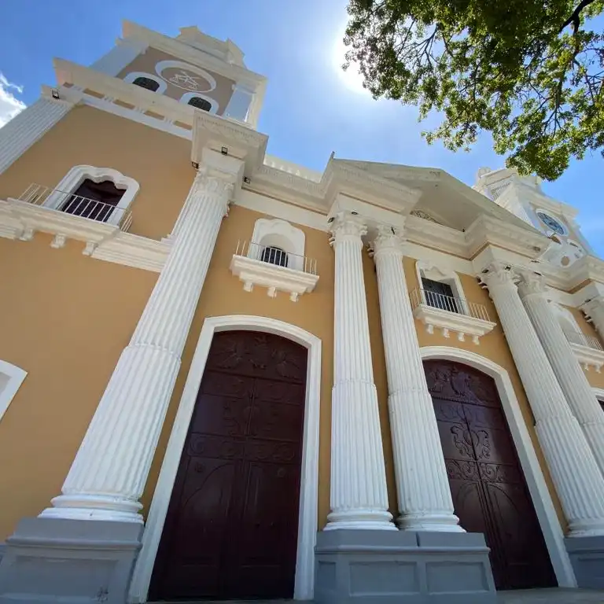
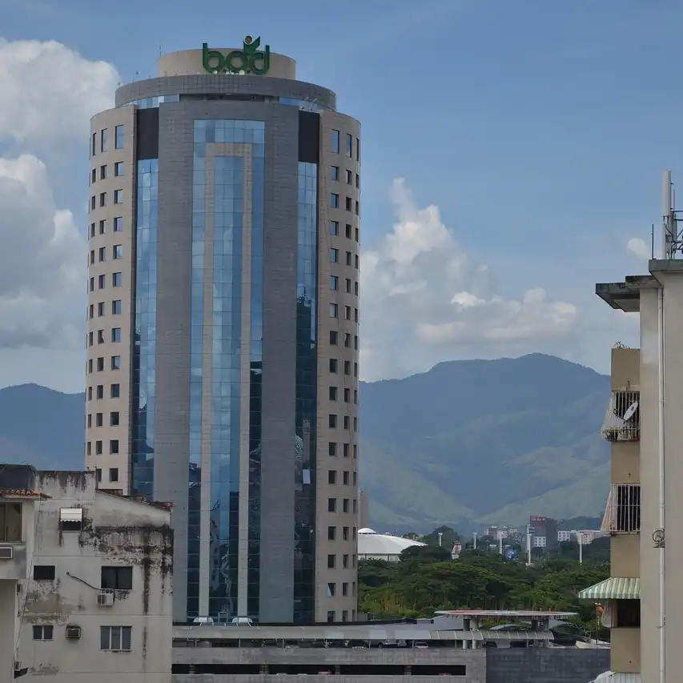

Valencia, situated within the Central Region of Venezuela, boasts a population of 2,184,430 residents, making it the most populous city in the region and the third most populated city nationwide.
Statistical data
1. Valencia is the third-largest city in Venezuela, after Caracas and Maracaibo.
2. The city has a population of approximately 1.7 million people, making it one of the most populous cities in the country.
3. Valencia is an important industrial and economic hub in Venezuela, known for its manufacturing sector, particularly in the automotive industry.
Historical Events
Valencia was the capital of Venezuela on three occasions: in 1812 when the public powers of the Provisional Government were transferred there during the Venezuelan War of Independence, and provisionally in 1830 with the dissolution of Gran Colombia and in 1858 when the March Revolution triumphed.
During the Venezuelan War of Independence, Valencia was the scene of great events, the most famous of which was the Battle of Carabobo on June 24, 1821.
Attractions
In Valencia, Venezuela, visitors can explore a variety of attractions, including the colorful Mercado Municipal Market, the historic Valencia Cathedral, the bustling Plaza Bolívar, and the unique Parque Negra Hipolita. Additionally, nature enthusiasts can enjoy the lush landscapes at the nearby Henri Pittier National Park or relax on the stunning beaches of Morrocoy National Park.
Visits
You have been here times. Come back soon!

Arc of Carabobo, Symbol of the Independency

Bolivar Square

Municipal Theather

Negra Hipolita Park

Principal Catholic Catedral

BOB Tower, One of the principal Commerce buildings in the city